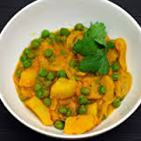

Home
Quick Menu
Lettuce Salad
Aloo Chaat
Pasta
French Toast
Anda Bhurji
Vegetarian
Aloo Matar
Paneer Tikka
Roasted Potatoes
Vegetable Fried Rice
Chole
Non-Vegetarian
Chicken Tikka
Butter Chicken
Fish Curry
Fish Fry
Pepper Chicken
Desserts
Gulab Jamun
Double Ka Meetha
Gajar Ka Halwa
Banana Pie
Rice Kheer
Contact Us

Aloo Matar :
This dish consists of potatoes and chickpeas with sauteed tomatoes and onions. This dish is easy to make and very nutritious.
Paneer Tikka :
A great cottage cheese dish marination with herbs,spices and yogurt,and grilled along with bell peppers.
Roasted Potatoes :
The simplest dish of the lot. Potatoes being every one's favorite, tossed with mint leaves and butter will get you addicted to th dish.
Vegetable fried rice :
Vegetable fried rice for the ones who do not have time to pack their lunch box for work ! Veggies tossed with cooked rice and some pepper!
Chole :
Chole is India's most loved dish. It is soaked overnight so that the beans cook well and taste tremendous.